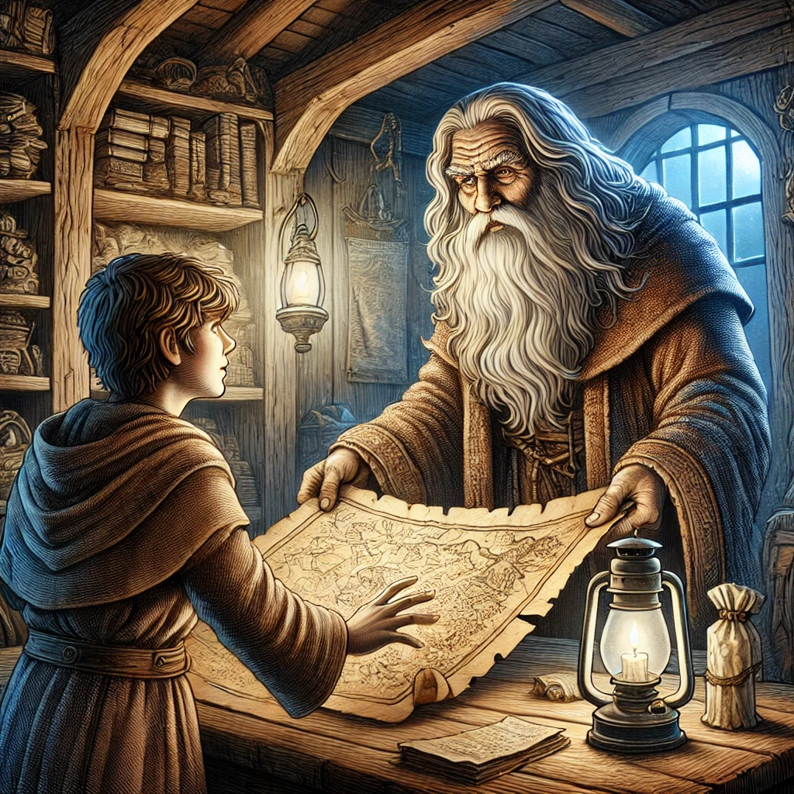

Você chega a uma floresta sombria enquanto procura um tesouro perdido. Para onde você vai?
Você encontra uma cabana velha com uma luz acesa.
Você encontra um lago brilhante com um barco abandonado.

Dentro da cabana, um velho sábio lhe dá um mapa do tesouro.
Você é atacado pelas criaturas da floresta e não consegue escapar.
Você encontra uma chave dourada escondida na água.
O barco afunda no meio do lago e você desaparece nas profundezas.